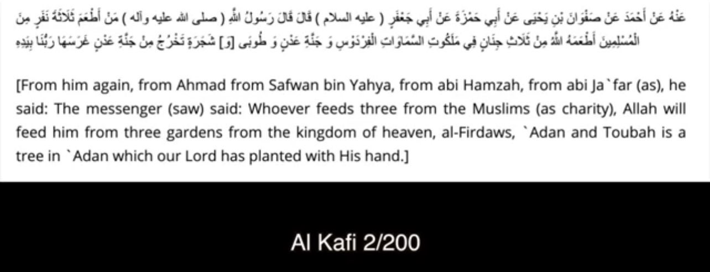
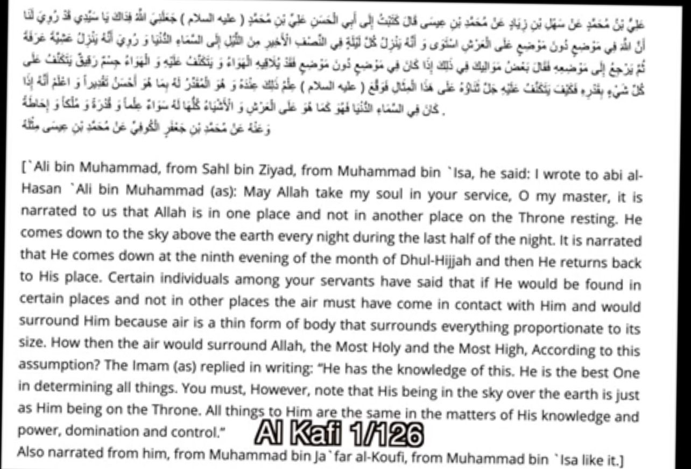
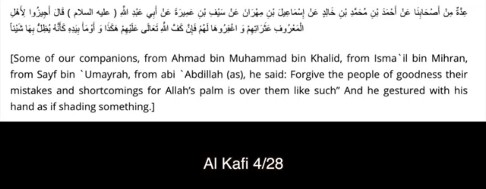
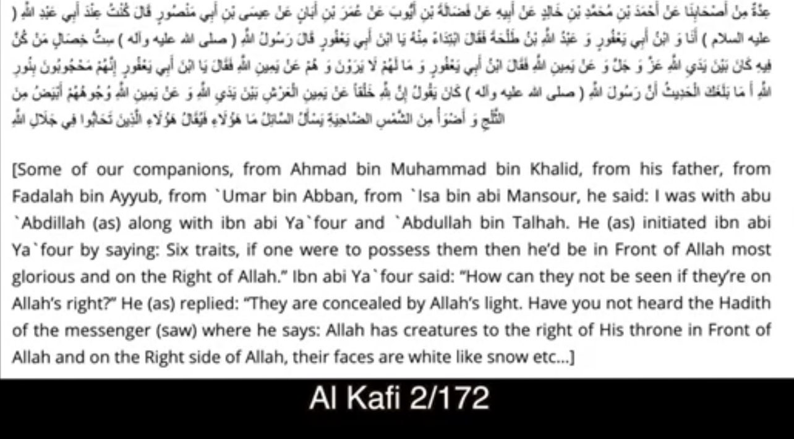
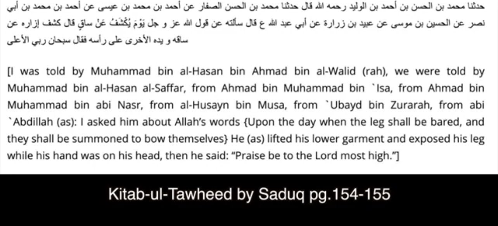
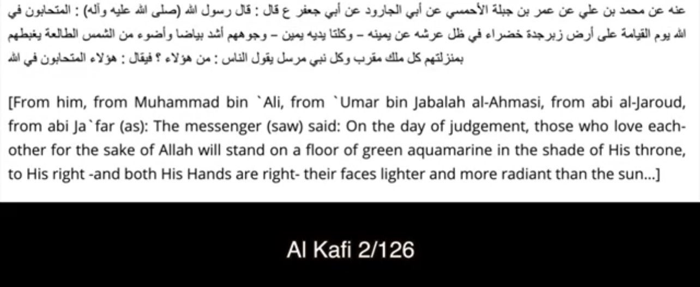
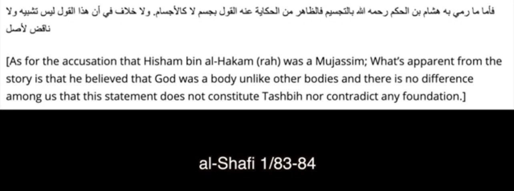
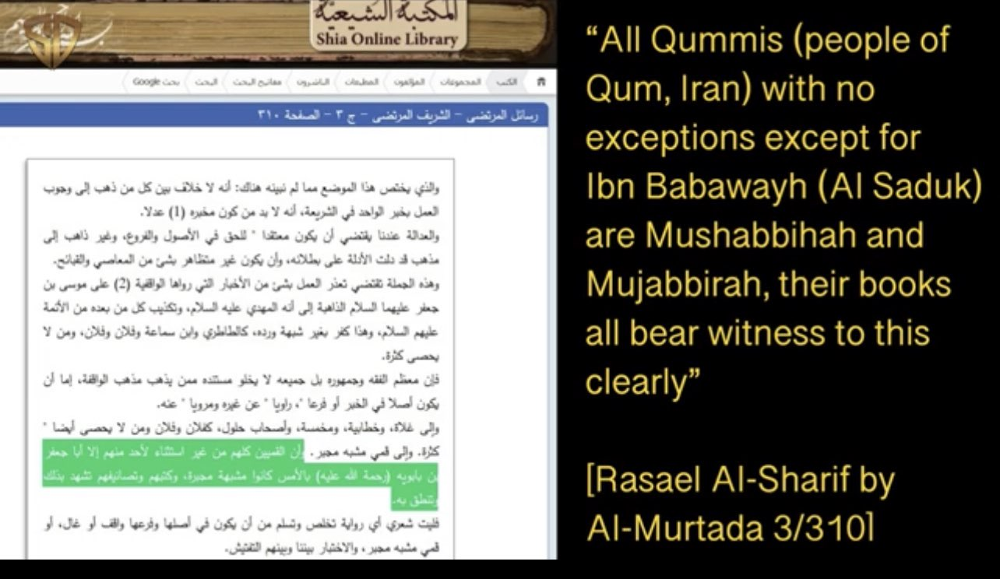

❗️Allah has a hand

❗️Allah descends

❗️Allah has a palm

❗️Allah has direction

❗️Allah has a leg

❗️Allah stands

❗️Allah has a body

❗️Early Shias believed in Tajsim

In other words Shias are mujassim
http://www.twelvershia.net/2016/03/24/throne-of-allah-in-shia-hadiths/
TwelverShia.net
The Throne of Allah in Shia Hadiths - TwelverShia.net
The Throne of Allah in Shia Hadiths The following is a compilation of authentic Shia narrations that give us some insight into the nature of the throne. We often hear Shi’ee criticism towards Ahlul Sunnah for being “literalists”. The modern [read more]
http://www.twelvershia.net/2016/02/27/tashbeeh/
TwelverShia.net
Tashbeeh & Tajseem in Shia texts - TwelverShia.net
WARNING: This article glances briefly at some dangerous ideas that are too advanced for the regular layperson, please seek the aid of your local qualified scholar to address any doubts. This article is an attempt by this weak slave to write a simple [read more]
https://m.youtube.com/playlist?list=PLV7ZAgH7-RROjM9D9-J8N4vA901gU0gJ9
YouTube
Tashbeeh & Tajseem
https://m.youtube.com/watch?v=x1T8EIr740I&t=2884s
YouTube
Sunnah Discourse
Shia Propaganda Destroyed